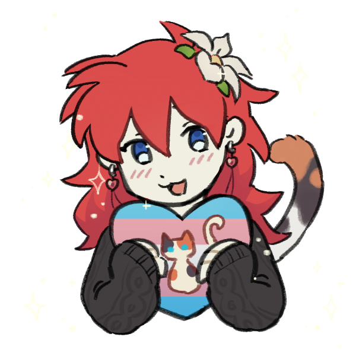
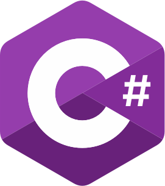
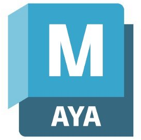
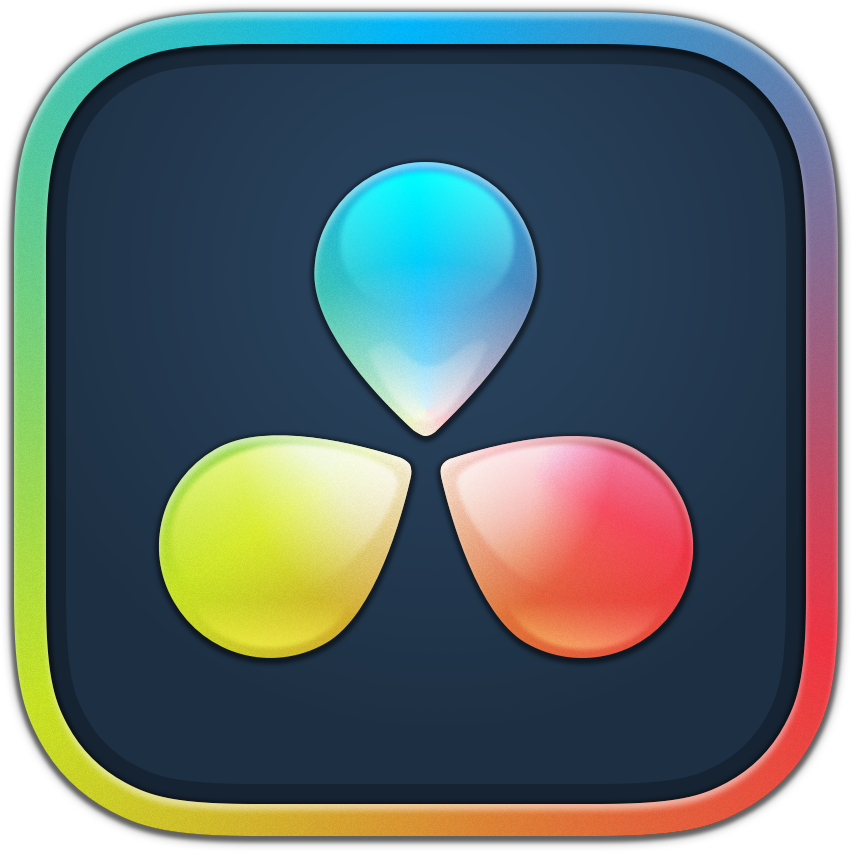
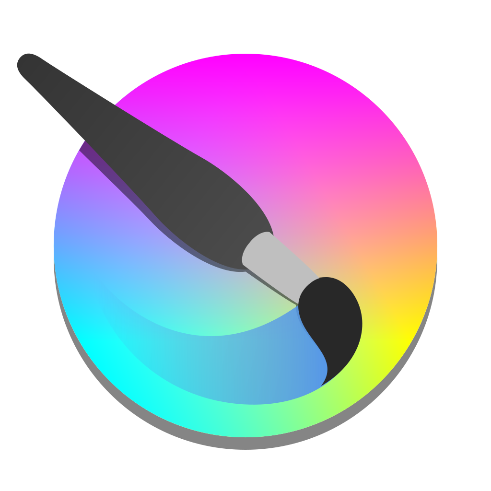

About Me
Hiya! I'm Emily, a 21 year old GameDev from the UK currently studying game design at the University of Hull. Online, I go by Ems and Pilcro.
I specialise in game programming though I enjoy all aspects of game design. 3D modelling, level design and sound design are also interests of mine.
I've been making games since I was very young. I started by designing levels on paper when I was 6 or 7, forcing my parents to trace their fingers through them as if they were playing them, much to their dismay. When I was 9, my grandparents got me a Raspberry Pi which opened up a whole new world of possibilities for me. I started programming in Scratch and then later wrote Python scripts to interact with Minecraft Pi edition. I kept up with Scratch for many years before moving onto making games in Python using PyGame and then Godot. I then got into the University of Hull and learnt the Unity game engine, making lots of little prototypes and games.
I'm currently working on an online mutliplayer versus spelling game called Spellington and a visual novel style dialogue system as a package for Unity called Diadem.
Languages

Engines
Software


